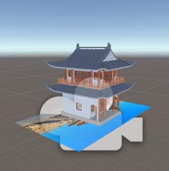

Blog

Use shader code in Unity to reproduce art effects
Exploring various artistic rendering techniques using Unity shaders to create unique visual styles.

Realize virtual simulation technology of 3D model appearing in scanned pictures
Implementation of AR technology that displays 3D models when scanning specific images.